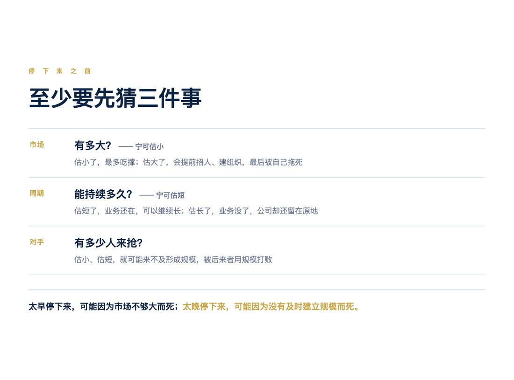
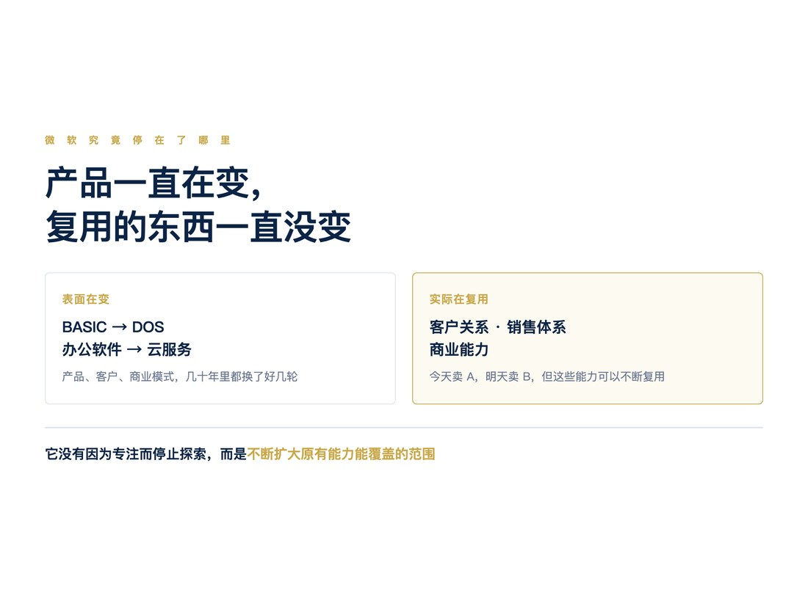
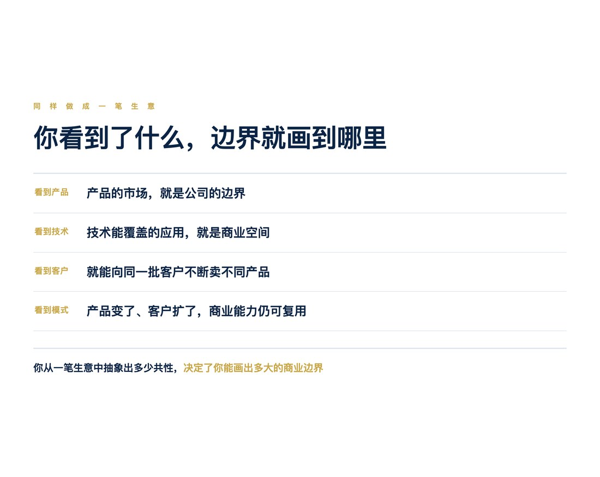
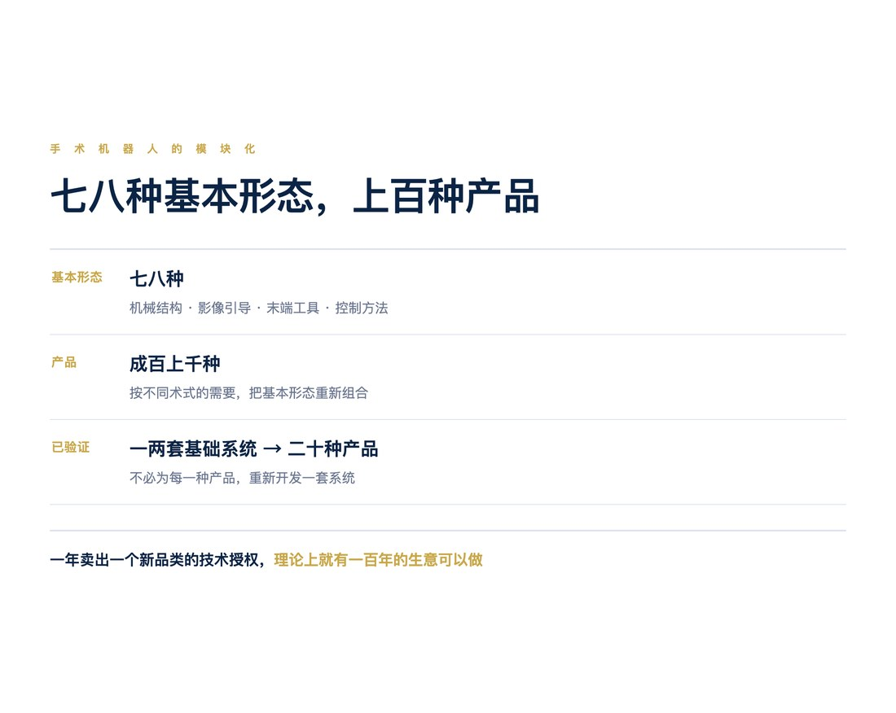
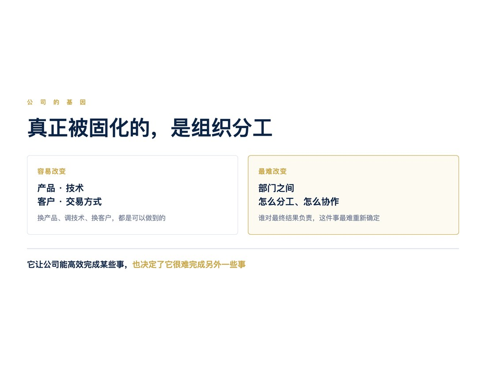
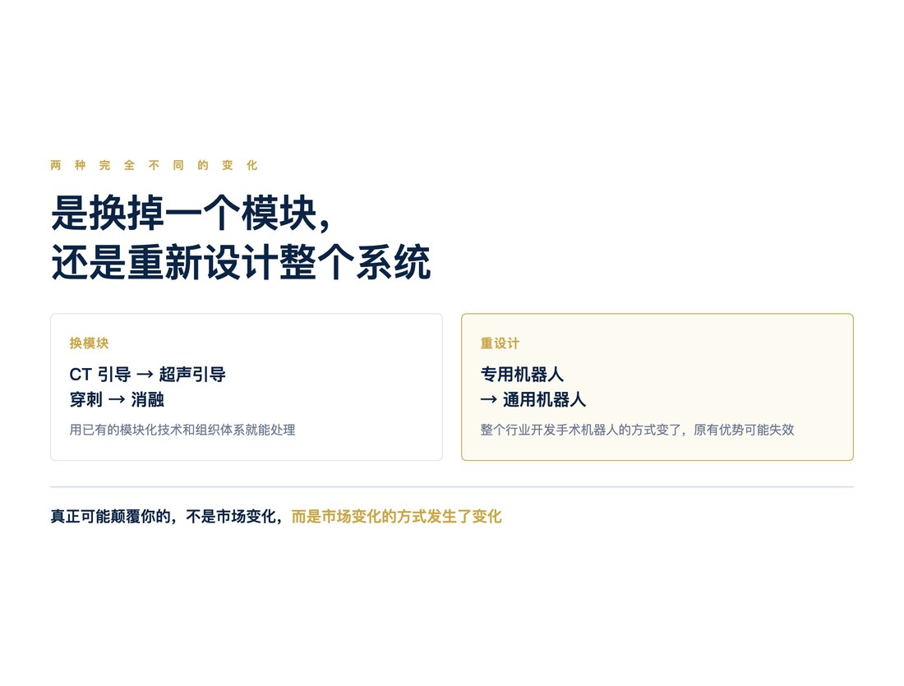

创业最危险的时刻是什么时候？
我觉得，不是没有订单的时候，不是融资困难的时候，甚至不是公司快要活不下去的时候。
而是创业者决定什么时候停下来。
这里说的停下来，不是停止创业，而是停止不断寻找新的机会，决定专注于某一类业务，开始复制。
在我看来，这可能是创业过程中最困难、也最危险的一个决定。
因为这个决定，可能让一家公司真正做大，也可能让它从此走向死亡。
◇ ◇ ◇
一、创业就是打猎：什么时候应该停下来？
创业初期，绝大多数时候，生意根本做不起来。
一个人或者几个人组成团队，找客户，谈项目，试各种办法。偶尔做成一单，就像打猎时打到了一只猎物。
吃饱一顿。
然后饿上三天。
好不容易，又打到一只。
创业初期，大多数公司就是这样活着的。
这个过程很痛苦。收入不稳定，不知道下一单在哪里，也不知道下一次成功是什么时候。
但我觉得，这个阶段虽然痛苦，其实并不特别危险。
因为只要团队还有本事，总能想办法找到一些事情做。大不了做外包，卖人力，卖技术。一个有能力的技术团队，即使没有找到真正的商业模式，通常也还有机会养活自己。
打猎看起来很不靠谱，但老实说，很多创业团队并不是在打猎的时候饿死的。
真正危险的，是决定不再打猎的时候。
因为创业者不可能永远打猎。
偶尔做成一单，只能证明你有能力做成一件事。做成十单不同的生意，也不意味着你拥有一家能够持续经营的公司。
只有当某一种业务能够不断重复，你才有可能建立一家真正的公司。
幸运的创业公司，做完一单，下一单就来了。
创业者甚至没有时间思考什么时候应该停止探索。因为订单不断重复，组织自然扩大，商业模式也在这个过程中逐渐形成。
这也是为什么人们常说，创业应该只做一件事。
我觉得，这个建议背后的道理，并不是专注本身有多么神圣，而是如果你只做一件事，却有源源不断的客户来找你，那么你的公司就自然形成了。
但是，更多创业公司没有这么幸运。
它们不得不尝试各种方法，做各种项目。有些成功，有些失败。至于成功的那些生意究竟能不能重复，谁也说不清楚。
而这时候，创业者必须做出一个非常困难的决定：
是继续寻找机会，还是停下来，把已经找到的机会做成一家公司？
停下来意味着什么？
首先意味着拒绝新的机会。
过去是做一单算一单，现在却必须把资源集中在一种业务上。
接着开始招人、分工，建立部门之间的协作关系，增加固定成本，最后实现规模化。
我甚至觉得，融资也应该主要发生在这个阶段。
因为资本最重要的作用，是帮助企业扩大已经找到的生意，而不是代替创业者寻找生意。
问题是，一旦决定复制，公司就开始依赖某种业务能够持续存在。
如果这种业务可以不断重复，公司就可能成功。
但如果不能持续，公司反而可能因此死亡。
所以，什么时候停止探索、开始复制，是创业最危险的决策之一。
◇ ◇ ◇
二、停下来的风险：市场有多大，能够持续多久？
创业者为什么很难做出这个决定？
因为他必须在极少的信息下，判断一个尚未看清的市场。
尤其是科技创业。
很多时候，创业者早期做成的第一单，本来就是误打误撞的。
客户偶然有一个需求，而你恰好有能力解决。
项目做得很好，技术取得了突破，客户非常满意，也赚到了钱。
但这并不意味着你找到了一门可以长期经营的生意。
真正应该问的，不是这一单做得怎么样。
而是：
这样的订单还有多少？
更困难的是，在你还不知道客户在哪里的时候，就必须估算未来有多少客户，以及他们愿意付多少钱。
这不是执行问题，而是认知问题。
你可能非常清楚怎样完成一个项目，却完全不知道类似的项目还有多少。
说到底，就是猜。
我觉得，决定停下来之前，创业者至少需要猜测三件事。
1. 市场究竟有多大？
市场空间宁可估小一点，也不要估大了。
估小了，结果客户比预想的多，订单接不过来，最多就是吃撑了。
但估大了，就可能提前招了很多人，投入大量资金，建立了庞大的组织，最后却发现根本没有那么多客户。
公司就可能被自己建立的组织拖死。
2. 这个生意能够持续多久？
科技行业尤其如此。
今天非常热门的需求，几年以后可能就不存在了。
你以为能够做十年的业务，可能两年就结束了。
所以，持续周期估短一点，通常也比估长了好。
估短了，业务还在，可以继续发展。
估长了，业务没有了，公司却还在那里。
至少前一种情况，你还活着。
3. 会有多少人来抢这个生意？
但前面两个判断，又存在一个很大的问题。
那就是竞争。
如果你把市场估小了，扩张得很慢；把周期估短了，不敢长期投入，那么即使最早发现了机会，也可能没有及时形成规模优势。
结果其他竞争者看到了市场，迅速投入资金，扩大生产，建立品牌、渠道和成本优势。
最后，你可能被后来者依靠规模打败。

因此，创业最困难的地方就在这里：
太早停下来，可能因为市场不够大而死；太晚停下来，又可能因为没有及时建立规模而死。
这件事情没有标准答案。
可能也与创业者各自的性格有关。
有人谨慎，有人激进。有人愿意冒错过机会的风险，有人愿意冒失败的风险。
但无论怎样选择，创业者都无法真正消除风险。
不过，我后来觉得，我们常常忽略了另外一个问题。
停下来，并不意味着从此不再变化。恰恰相反，停下来，也应该是在为未来的变化做准备。
因为任何一个具体市场，都可能消失。
产品会被替代，客户需求会改变，技术路线也可能发生变化。
所以，真正重要的，不只是今天能够复制什么，还要考虑未来发生变化时，公司能不能继续生存。
一个方法，是控制组织的规模与扩张周期。
我们无法准确预测未来，但可以控制投入多少资源、建立多大的组织，以及用多长时间验证自己的判断。
另一个方法，则更加重要：
在决定复制之前，想清楚自己究竟准备复制什么。
◇ ◇ ◇
三、从变化中看到永恒：微软究竟停在了哪里？
我后来经常思考微软的例子。
微软早期并不是一家操作系统公司。
它最初做的是 BASIC 等编程语言，也开展过其他软件业务。直到1980年前后，才进入 IBM PC 操作系统这个重要市场。
但我一直有一个疑问。
微软获得 IBM 的 DOS 订单时，真的知道以后会有多少类似的订单吗？
恐怕也不可能完全知道。
那么，盖茨究竟看到了什么，让他认为这是一门值得长期投入的生意？
以前我觉得，微软是在操作系统这个产品上停下来的。
但后来想想，可能不是。
微软真正停下来的地方，也许不是操作系统，而是软件授权这种商业模式。
事实上，微软在 BASIC 时代就已经开始软件授权。到了 DOS 时代，这种模式获得了更大的市场。
如果盖茨看到的只是 IBM 的操作系统订单，那么他面对的问题就和所有创业者一样：
IBM 还会不会有第二单？
其他公司会不会购买同样的操作系统？
但如果他看到的是软件授权这种商业模式，问题就不一样了。
操作系统可以授权。
编程语言可以授权。
办公软件也可以通过类似的方式销售。
今天卖 A，明天就可能卖 B。
而客户可能还是同一批客户，销售渠道、品牌和商业关系都可以重复利用。
当然，微软后来的产品、客户和商业模式都经历了很大变化。从 OEM 授权、软件零售，到企业许可和云服务，并不是一种模式从未改变。
但我认为，这些不同业务之间存在着某种重要的连续性。
微软表面上一直在开发新的产品，实际上却在不断扩大原有客户关系、销售体系和商业能力能够覆盖的范围。
所以，它并没有因为专注于软件而停止探索。
恰恰相反，它不断推出新的产品，进入新的市场。
但在这些变化背后，有些东西可以不断复用。
我觉得，这可能是微软更值得学习的地方。

Oracle 也让我想到类似的问题。
Oracle 的前身成立于1977年，早期从事软件开发与咨询，随后将关系型数据库作为重要的商业化方向，并逐渐发展出跨平台的数据库产品。
Oracle 的具体发展路径当然与微软不同。
但它们让我思考的，是同一个问题：
创业者究竟应该从最初做成的生意中，抽象出什么值得长期复制的东西？
如果看到的是某一个产品，那么产品的市场就是公司的边界。
如果看到的是一类技术，那么这项技术可以覆盖的应用，就是公司的商业空间。
如果看到的是客户，那么就可能向同一批客户不断销售不同产品。
如果看到的是一种商业模式，那么即使产品发生变化，客户群体不断扩展，公司仍然可能复用原有的商业能力。
所以，同样做成一笔生意，不同的创业者可能从中看到完全不同的东西。
你从一笔生意中抽象出多少共性，决定了你能够画出多大的商业边界。
而这个边界，不只决定公司的市场空间，还可能决定业务能够持续多久。

不过，还有一个同样重要的问题。
既然我们通过寻找共性来扩大商业空间，那么不同业务之间的差异，又该如何处理？
我后来意识到：
看到什么是“同”，决定了你能画多大的圈；怎样处理“异”，决定了你能以多高的效率经营这个圈。
如果每做一个新产品，都需要重新研发，重新寻找客户，重新建立组织，那么虽然业务不断增加，却没有形成多少真正的积累。
但如果能够用同一套技术、同一批客户或者同一种销售方式，不断完成不同的业务，那么新的生意就可以复用过去的投入。
这就是我理解的商业效率。
而且，选择什么作为共性，也决定了我们如何理解变化。
如果固定的是产品，那么产品变化就是威胁。
如果固定的是技术平台，那么产品变化可能意味着新的应用。
如果固定的是客户关系和销售体系，那么不同产品甚至不同技术之间的变化，也可能成为新的商业机会。
你认为哪些东西应该不变，就决定了你能够容纳多大的变化。
这也是我现在理解的，从变化中看到永恒。
但这里的永恒，并不是真的永远不变。
而是从不断变化的市场中，找到那些相对稳定、可以长期复用的东西。
◇ ◇ ◇
四、我自己的经历：为什么坚持手术机器人技术授权？
我自己创业时，也经历过很多这样的迷茫。
尤其是在决定是否长期坚持手术机器人技术和专利授权业务的时候。
我一直把这种生意理解为某种意义上的“卖军火”。
自己不一定直接进入终端市场竞争，而是向不同企业提供机器人技术和授权。
但问题是，这种生意真的能够一直做下去吗？
做成一单授权，并不意味着第二单一定会出现。
而且，不同客户的需求可能差别很大。
今天是一种手术机器人，明天又是另外一种。
难道我们就要一直开发不同的定制产品？
我后来决定继续坚持，主要是因为对手术机器人市场形成了一个判断。
未来不是某一种手术会使用机器人，而是所有手术都可能逐渐由机器人完成。
如果这个判断成立，那么未来的手术机器人市场就不是几种产品，而可能有成百上千种不同产品。
但我又发现一个很有意思的事情。
手术机器人表面上可能有成百上千种，底层的机器人基本形态却可能只有七八种。
不同的产品，无非是根据不同手术的需要，把这七八种基本形态重新组合。
有的需要不同的机械结构，有的需要不同的影像引导方式，有的需要不同的末端工具，也有的需要不同的控制方法。
但底层技术存在大量共性。
这就意味着，我们不需要为每一种手术机器人重新开发一套技术。
只需要掌握有限的基本形态，通过模块组合，就可能形成上百种产品。
因此，我们选择了模块化。
把机器人系统拆成可以重复使用的技术模块，像搭积木一样组合。
不同产品的需求不同，但底层尽量使用同一套系统。
最后，我们用一两套基础系统，覆盖了二十种不同产品。
我觉得，这是我们能够活下来的一个重要原因。
因为如果每一种产品都重新开发一套系统，我们根本承受不了这样的成本。

但后来，我又从这个技术判断中，看到了一个更重要的商业判断。
如果有限的基本形态能够组合出上百种不同的手术机器人，那么一年只需要卖出一个新品类的技术授权，理论上就有一百年的生意可以做。
当然，这不是说公司真的能够保证经营一百年，而是说明这门生意不一定需要依靠某一个产品的持续增长。
比如穿刺机器人。
第一年，可以做普通穿刺机器人。
第二年，可以做 CT 引导穿刺。
第三年，可以做超声引导穿刺。
第四年，可以做 X 光引导穿刺。
第五年，可以做脊柱穿刺。
第六年，可以做心脏穿刺。
第七年，可以做穿刺消融。
以后还可以不断产生新的组合和应用。
这些应用不一定都能形成独立的商业市场，但对企业来说，可能分别意味着不同的产品需求。
而对我们来说，它们可能只是已有技术平台的一次重新组合。
从 CT 引导换成超声引导，需要替换相关的影像模块，并调整系统集成。
从身体一个部位换到另一个部位，可能需要修改机械结构、运动空间、工具和控制参数。
具体的技术工作当然并不简单。
但有一点非常重要：
我们不需要为了每一种新产品，重新建立整个技术体系和组织分工。
所以，我决定坚持技术授权，并不是因为我相信某一种手术机器人市场能够永远存在。
恰恰相反。
我是因为相信市场会不断变化，才决定坚持。
新的术式会不断被机器人化。
新的产品品类会不断出现。
新的公司和研发团队也会不断出现。
今天，可能有一百家公司集中竞争某一种热门术式的手术机器人。
我觉得，这种竞争格局很难长期持续。
因为单一术式的市场容量有限，不可能无限容纳同质化的竞争者。
但整个手术机器人市场却远远没有发展到终点。
未来如果有上百种不同的机器人产品，就可能需要大量不同的企业和团队参与研发与竞争。
对整机制造商来说，新竞争者的出现可能意味着压力。
但对技术授权公司来说，这些企业却可能成为客户。
我不需要押注某一种手术机器人最终胜出，也不必依靠某一家客户长期成功。
只要行业持续产生新的专用机器人品类，就可能不断出现新的授权机会。
市场不断变化，恰恰是这门生意能够持续的原因。
不过，现在回头看，我认为我们当时的理解仍然有局限。
我们解决了技术和产品的求同存异，却没有同样解决客户和交易的求同存异。
我们用一两套技术系统覆盖了二十种产品。
而微软可以向同一个客户销售许多不同的软件。
我们复用的是技术平台。
微软复用的则更多是客户关系、销售渠道和商业能力。
我们降低了开发下一种产品的成本，却没有同样降低获得下一笔生意的成本。
每一个新客户，仍然可能需要重新寻找、重新建立信任、重新谈判。
因此，我们虽然通过模块化大幅提高了技术效率，却仍然保留了相当多“打猎”的特点。
这是我后来觉得微软比我们做得更好的地方。
技术的可复制性，不等于交易的可复制性。
这也是我认为自己过去在商业模式认知上的不足。
但与此同时，我对技术授权模式又形成了另一层更深的理解。
那就是组织。
◇ ◇ ◇
五、公司的基因：真正被固化的是组织分工
从我自己的经验看，产品可以变化，技术可以调整，客户和交易方式也可以改变。
但公司最难改变的，往往是组织分工。
因为一旦公司建立了稳定的部门分工，部门之间的协作方式也就基本固定了。
软件部门负责软件。
硬件部门负责硬件。
机械部门负责机械。
销售部门负责销售。
测试部门负责测试。
每个部门都可以在自己的工作范围内不断改进。
但如果新的业务要求改变部门之间的分工，事情就困难得多。
原来两个部门先后完成的工作，现在可能需要同步进行。
原来只需要检查每个部门的独立成果，现在可能需要几个部门共同对最终功能负责。
这种变化不是增加一个部门就能解决的。
因为新部门加入以后，它与原有部门怎样分工、怎样合作、由谁负责最终结果，都需要重新确定。
而且，原有部门的职责、资源和工作方式也可能需要调整。
所以，公司容易适应部门内部的变化，却很难适应部门之间协作关系的变化。
我觉得，这在某种程度上，就是所谓公司的基因。
公司的基因，不只是它拥有什么技术，生产什么产品。
更是它如何分工，以及不同部门之间如何协作。
这套分工体系，使公司能够高效率地完成某些事情。
但也决定了它很难完成另外一些事情。
而且，这既是我们自身的局限，也是竞争对手的弱点。

为什么机器人更容易从新团队中产生？
机器人行业就是一个很好的例子。
我一直认为，机器人这种业务，很难简单地从一家传统的软件公司、电子公司或者机械设备公司内部自然生长出来。
不是因为这些公司没有资金。
也不是因为它们没有技术。
甚至不是因为它们没有市场。
而是因为机器人需要一种不同的组织分工。
机器人是软件、硬件、机械和控制高度耦合的系统。
机械结构会影响控制算法。
控制算法又会影响机械设计。
软件必须与真实硬件紧密协作。
测试尤其如此。
传统软件公司可能更习惯软件功能测试。
电子公司可能更关注电路和电子系统的性能。
机械设备公司则可能围绕机械性能和可靠性建立测试体系。
但机器人需要的是以真实硬件为基础的系统功能测试。
最终要验证的，不只是软件是否正确、电路是否正常、机械结构是否符合设计要求。
而是整个机器人能不能完成预期的任务。
这就意味着，软件、硬件、机械、控制与测试需要高度协同。
因此，一家成熟企业即使拥有所有这些技术部门，也不意味着它能够轻易开发出机器人。
因为机器人要求改变的，不是某个部门的技术能力，而是这些部门之间的协作方式。
简单增加一个机器人部门，可能根本解决不了问题。
这就是为什么，我认为机器人创新更容易从新的公司或相对独立的团队中产生。
新团队没有既有组织分工的负担，可以从一开始，就按照机器人的研发需求设计协作方式。
真正的创新，有时不是创造一种新技术，而是创造一种新的组织方式。
当然，成熟企业也可以通过建立独立团队、收购公司或者重组内部组织实现创新。
但这些做法本身，恰恰说明新的业务需要不同于原来组织的协作体系。
为什么机器人客户需要外部团队？
当我接触了许多机器人客户以后，对技术授权的长期价值又形成了一个新的判断。
以前我认为，客户购买我们的技术，是因为他们需要我们的专利、产品和研发能力。
但后来我发现，很多客户并不是缺钱，也不是缺技术，甚至不是缺少市场。
他们真正缺少的，是一套适合机器人研发的组织分工。
一家成熟企业已经拥有自己的业务。
它的技术部门、生产部门、销售部门，经过多年发展，形成了一套高效率的协作体系。
这套组织支撑着它今天的收入和利润。
现在，机器人出现了。
机器人很重要，未来可能更加重要。
但问题是：
机器人是否已经重要到值得它推倒原有组织，重新建立一套分工体系的程度？
对于很多企业来说，答案可能是否定的。
不是它们不愿意投入，也不是它们不相信机器人。
而是为了一个尚未成为核心业务的新市场，彻底改变现有组织，代价太大。
所以，它们更可能选择与外部团队合作。
购买技术、获得授权，或者投资、支持一家独立的机器人公司。
这样，既能够参与新的机器人市场，又不需要立即改变自己原来的组织。
从这个角度看，客户购买的就不只是技术。
客户实际上还在购买一种它自己不容易建立的组织能力。
而且，随着机器人越来越重要，这种外部需求未必会减少。
因为市场需求的增长，并不会自动消除组织重构的困难。
对许多成熟企业来说，即使机器人业务越来越重要，它们也可能更愿意继续使用外部团队，而不是彻底改变现有组织。
这就为独立的机器人技术团队，留下了长期存在的商业空间。
不过，这种优势同样不是永恒的。
客户可能建立独立的机器人团队，也可能收购外部公司，甚至逐渐掌握新的组织能力。
所以，技术授权业务的长期价值，也需要根据客户组织的演化不断验证。
什么样的变化，真正可能颠覆我们？
我后来思考，真正可能冲击我们这种技术授权模式的，未必是另一家专用手术机器人公司。
因为只要大家仍然针对不同术式开发不同的专用机器人，那么新产品不断出现，就可能不断产生授权需求。
真正的挑战，可能来自另一种技术路径。
例如，未来通用人形机器人或者通用操作机器人，能够直接使用手术器械，完成各种不同的手术。
如果那一天真的到来，医院可能不再需要为每一种术式配置不同的专用机器人。
企业也可能不再需要针对每一种手术，开发一套新的专用机械系统。
那时变化的，就不再是某个产品模块。
而是整个行业开发手术机器人的方式。
这可能意味着新的机械架构、新的控制体系、新的训练方法，以及新的系统测试与验证方式。
我们原来建立的模块化技术优势，甚至原有的组织分工，都可能需要重新考虑。
当然，这目前仍然是一种假设。通用机器人能否满足临床手术对精度、安全、可靠性和监管验证的要求，还有很大的不确定性。
但从企业战略上，它说明了一个非常重要的问题。
真正可能颠覆我们的，不是市场发生变化，而是市场变化的方式发生变化。
从 CT 引导变成超声引导，是一种变化。
从穿刺变成消融，也是一种变化。
这些变化可以通过已有的模块化技术和组织体系处理。
但从专用机器人转变成通用机器人，就可能要求重新设计整个系统。
这就是两种完全不同的变化。

所以，我现在更加清楚地理解了自己当时坚持技术授权的原因。
变化是恒定的，稳定的只是变化的方式。
我们并不是相信某一种产品能够永远存在。
我们相信的是，在相当长的时期内，新的手术会不断被机器人化，而这种机器人化的方式具有一定的共性。
只要这种变化方式保持相对稳定，我们就可以不断复用现有技术和组织能力。
这就是我们看到的相对的永恒。
◇ ◇ ◇
六、从变化中看到永恒，与一开始就相信永恒
从这个角度回头看，我觉得今天一些一开始就获得大额融资的创业公司，可能面临着一个很特别的问题。
它们从创业的第一天，就已经停下来了。
因为大量融资往往建立在这样一个假设上：
未来会有一个巨大的市场。
这个市场足够大，足够持久，只要公司拥有足够的资金和执行力，就能够占据其中的一部分。
于是，公司一开始就按照规模化的方式建立组织。
招大量的人，投入大量研发，建设生产和销售体系。
甚至在真正的客户需求还没有充分验证之前，就已经确定了产品路线和组织分工。
当然，这种做法不是完全没有道理。
尤其是在中国和美国这样的大市场，有些机会的市场空间确实非常巨大，大到一家企业根本不可能独占。
在 VC 看来，既然未来市场这么大，那么尽早投入、迅速扩大规模，可能就是合理的选择。
问题是：
市场最终有多大，与它究竟以多快的速度成长，是两回事。
而且，还有一个更加难以预测的变量。
就是市场在成长过程中，会发生怎样的变化。
一个创业者可能正确判断，未来越来越多的手术会使用机器人。
但这个过程需要十年、二十年，还是更长时间？
哪些术式最先成熟？
医院会怎样采购？
产品形态会如何演化？
今天看起来最有前途的技术，十年以后还会不会是主流？
这些问题，不论创业者还是 VC，都很难准确估计。
所以，有时候创业者和投资人可能完全看对了长期趋势，却同时看错了市场成长的速度和变化的速度。
更危险的是，如果公司一开始就按照想象中的巨大市场建立了组织，那么它可能过早固化了部门分工和协作体系。
市场发生变化时，公司未必能够跟着改变。
而创业者可能并没有真正预见这些变化。
这与我对微软、Oracle，以及自己技术授权经历的理解，有一个很重要的区别。
一种创业，是先相信未来存在一个巨大市场，再围绕这个市场建立公司。
另一种创业，是从具体生意中看到市场如何变化，并找到一套能够持续应对这种变化的系统。
前者是在预测未来的市场。
后者则试图理解市场演化的方式。
当然，微软和 Oracle 的成功不能证明它们的创始人从一开始就看清了所有变化。
但它们的发展路径让我看到，一家企业能够长期成长，可能并不只是因为最初选对了产品，而是因为它能够不断复用并扩展自己的商业能力。
而我自己的经历，则让我对这种复用的边界有了更具体的理解。
我们通过有限的机器人基本形态，组合出不同产品。
通过相对稳定的组织分工，应对不断出现的手术应用。
这让我们能够持续经营，而不需要每次都重新建立团队。
但我们也知道，如果未来手术机器人从专用系统转向通用系统，那么原来的优势就可能失效。
这正是两种认知的区别。
从变化中看到永恒的人，首先承认变化是客观存在的，而所谓的永恒只是相对的。
他们寻找的，是那些能够在不断变化中长期复用的共性。
他们知道为什么应该坚持，也知道自己的坚持在什么条件下会失去意义。
但一开始就相信永恒的人，可能会把市场的长期趋势，当成一种确定性。
既然未来的市场足够大，那么剩下的问题似乎只是执行。
当业务发展不如预期，他们首先想到的，往往是资源不足。
资金不够。
人才不够。
销售团队不够强。
研发速度不够快。
或者创业者自己的执行力不够。
于是，他们希望获得更多资金，投入更多资源，坚持更长时间。
但他们可能忽略了另外一种可能：
市场确实在成长，长期趋势也没有错，但自己已经被市场的变化淘汰了。
原来的产品，可能不再是客户需要的产品。
原来的商业模式，可能已经失去效率。
原来的组织分工，也可能不再适合新的技术与市场。
甚至，原来被认为可以长期持续的市场，可能已经演变成一个完全不同的市场。
所以：
看对了未来，不等于自己一定属于那个未来。
我觉得，这正是从变化中看到永恒，与一开始就相信永恒之间最大的区别。
前者以变化为前提，寻找相对不变的东西。
后者以不变为前提，把变化理解为执行中的障碍。
而真正的企业家，应该不仅能够看到市场的未来，还能够理解市场变化的方式，以及自己建立的组织能够应对哪些变化。
结语：企业家真正设计的是什么？
回到最初的问题。
创业者究竟应该什么时候停下来？
我现在觉得，这个问题的关键，可能不是找到了哪一种值得长期做下去的产品。
甚至不是发现了一个足够大的市场。
而是：
创业者究竟从眼前的生意中，看到了什么可以长期复用的共性，并准备围绕它建立怎样的组织。
这个共性可能是技术。
可能是客户。
可能是交易方式。
也可能是一套组织分工与协作体系。
不同的选择，会形成完全不同的公司。
你看到的“同”，决定了你能够覆盖多大的商业空间。
你处理“异”的方式，决定了你的商业效率。
而你建立的组织分工，决定了能够以多低的成本处理这些变化。
所以，到了这个时候，创业者才真正成为企业家。
因为他不再只是寻找机会、完成订单。
他是在设计一个系统。
这个系统能够覆盖多大的市场？
能够容纳多少不同的产品和客户？
能够应对多少变化？
什么样的变化只需要替换一个模块？
什么样的变化需要重新设计整个组织？
这些判断，最终决定一家企业能够走多远。
而且，我们也应该认识到，组织分工既是竞争优势，也是竞争劣势。
它让我们能够高效率地完成某些事情，也使我们很难完成另外一些事情。
这种局限不仅存在于自己身上，也同样存在于竞争对手身上。
成熟企业可能拥有资金、技术和客户，却因为不愿意重组组织，而无法独立完成新的创新。
这就为新的创业团队留下了机会。
但新的创业团队一旦决定停下来，建立稳定的分工与协作，也会逐渐形成自己的组织边界。
所以，创业并不存在一种能够永远正确的组织设计。
只有在一定时期内，能够适应某种市场变化方式的组织。
我觉得，这才是企业家真正需要的认知。
创业初期，我们像打猎一样寻找生意。
偶尔打到一只猎物，吃饱一顿，然后继续寻找下一只。
有些人运气很好，发现一个地方猎物很多，于是决定在那里建立营地。
但真正优秀的企业家，看到的可能不只是那个地方究竟有多少猎物。
他看到的是整片森林，以及森林中的猎物会怎样不断变化。
他设计的不是一套只适合捕捉某一种猎物的工具，而是一套能够长期应对这种变化的系统。
当然，森林也可能发生根本变化。
原来的猎物可能消失，新的动物可能出现，甚至整个生态系统都可能改变。
那时候，原来的系统也可能失去作用。
但这并不意味着今天不应该建立营地。
而是说，在决定建立营地之前，我们应该理解自己究竟在依靠什么生存。
所以，创业最危险的时刻，是决定什么时候停下来。
而比什么时候停下来更重要的，是：
你决定停在什么地方，以及你究竟选择固化什么。
因为你停下来的地方，就是你开始设计公司的地方。
而你选择固化的东西，既决定了公司的竞争优势，也决定了它未来的局限。
从变化中看到永恒，与一开始就相信永恒，是完全不同的。
前者知道，变化是客观存在的，永恒只是相对的。
后者却可能把今天看到的市场趋势，误认为未来不变的规律。
而最危险的事情，不是你看错了未来。
是你看对了未来，却没有看懂变化。
甚至直到被变化淘汰时，还以为自己只是资金不够、执行力不够。
真正值得坚持的，不是一个永远不变的市场，而是一套能够从变化中持续获得机会的系统。
但企业家也必须知道：
变化是恒定的，稳定的只是变化的方式。
当变化的方式也发生改变时，就到了重新思考自己公司的时候。